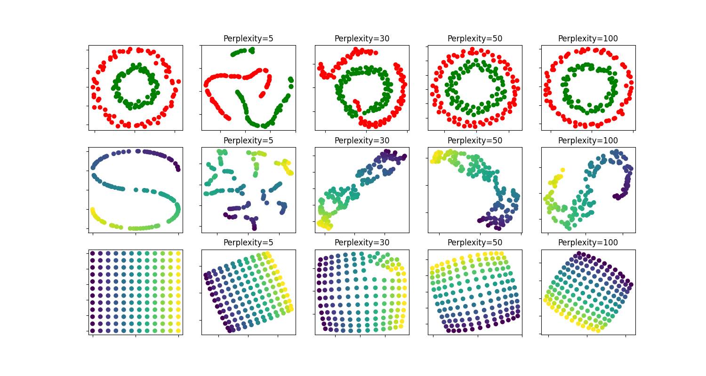

Note
Go to the end to download the full example code or to run this example in your browser via Binder
t-SNE: The effect of various perplexity values on the shape¶
An illustration of t-SNE on the two concentric circles and the S-curve datasets for different perplexity values.
We observe a tendency towards clearer shapes as the perplexity value increases.
The size, the distance and the shape of clusters may vary upon initialization, perplexity values and does not always convey a meaning.
As shown below, t-SNE for higher perplexities finds meaningful topology of two concentric circles, however the size and the distance of the circles varies slightly from the original. Contrary to the two circles dataset, the shapes visually diverge from S-curve topology on the S-curve dataset even for larger perplexity values.
For further details, “How to Use t-SNE Effectively” https://distill.pub/2016/misread-tsne/ provides a good discussion of the effects of various parameters, as well as interactive plots to explore those effects.
circles, perplexity=5 in 0.057 sec
circles, perplexity=30 in 0.07 sec
circles, perplexity=50 in 0.075 sec
circles, perplexity=100 in 0.075 sec
S-curve, perplexity=5 in 0.057 sec
S-curve, perplexity=30 in 0.068 sec
S-curve, perplexity=50 in 0.075 sec
S-curve, perplexity=100 in 0.075 sec
uniform grid, perplexity=5 in 0.07 sec
uniform grid, perplexity=30 in 0.086 sec
uniform grid, perplexity=50 in 0.09 sec
uniform grid, perplexity=100 in 0.092 sec
# Author: Narine Kokhlikyan <narine@slice.com>
# License: BSD
from time import time
import matplotlib.pyplot as plt
import numpy as np
from matplotlib.ticker import NullFormatter
from sklearn import datasets, manifold
n_samples = 150
n_components = 2
(fig, subplots) = plt.subplots(3, 5, figsize=(15, 8))
perplexities = [5, 30, 50, 100]
X, y = datasets.make_circles(
n_samples=n_samples, factor=0.5, noise=0.05, random_state=0
)
red = y == 0
green = y == 1
ax = subplots[0][0]
ax.scatter(X[red, 0], X[red, 1], c="r")
ax.scatter(X[green, 0], X[green, 1], c="g")
ax.xaxis.set_major_formatter(NullFormatter())
ax.yaxis.set_major_formatter(NullFormatter())
plt.axis("tight")
for i, perplexity in enumerate(perplexities):
ax = subplots[0][i + 1]
t0 = time()
tsne = manifold.TSNE(
n_components=n_components,
init="random",
random_state=0,
perplexity=perplexity,
n_iter=300,
)
Y = tsne.fit_transform(X)
t1 = time()
print("circles, perplexity=%d in %.2g sec" % (perplexity, t1 - t0))
ax.set_title("Perplexity=%d" % perplexity)
ax.scatter(Y[red, 0], Y[red, 1], c="r")
ax.scatter(Y[green, 0], Y[green, 1], c="g")
ax.xaxis.set_major_formatter(NullFormatter())
ax.yaxis.set_major_formatter(NullFormatter())
ax.axis("tight")
# Another example using s-curve
X, color = datasets.make_s_curve(n_samples, random_state=0)
ax = subplots[1][0]
ax.scatter(X[:, 0], X[:, 2], c=color)
ax.xaxis.set_major_formatter(NullFormatter())
ax.yaxis.set_major_formatter(NullFormatter())
for i, perplexity in enumerate(perplexities):
ax = subplots[1][i + 1]
t0 = time()
tsne = manifold.TSNE(
n_components=n_components,
init="random",
random_state=0,
perplexity=perplexity,
learning_rate="auto",
n_iter=300,
)
Y = tsne.fit_transform(X)
t1 = time()
print("S-curve, perplexity=%d in %.2g sec" % (perplexity, t1 - t0))
ax.set_title("Perplexity=%d" % perplexity)
ax.scatter(Y[:, 0], Y[:, 1], c=color)
ax.xaxis.set_major_formatter(NullFormatter())
ax.yaxis.set_major_formatter(NullFormatter())
ax.axis("tight")
# Another example using a 2D uniform grid
x = np.linspace(0, 1, int(np.sqrt(n_samples)))
xx, yy = np.meshgrid(x, x)
X = np.hstack(
[
xx.ravel().reshape(-1, 1),
yy.ravel().reshape(-1, 1),
]
)
color = xx.ravel()
ax = subplots[2][0]
ax.scatter(X[:, 0], X[:, 1], c=color)
ax.xaxis.set_major_formatter(NullFormatter())
ax.yaxis.set_major_formatter(NullFormatter())
for i, perplexity in enumerate(perplexities):
ax = subplots[2][i + 1]
t0 = time()
tsne = manifold.TSNE(
n_components=n_components,
init="random",
random_state=0,
perplexity=perplexity,
n_iter=400,
)
Y = tsne.fit_transform(X)
t1 = time()
print("uniform grid, perplexity=%d in %.2g sec" % (perplexity, t1 - t0))
ax.set_title("Perplexity=%d" % perplexity)
ax.scatter(Y[:, 0], Y[:, 1], c=color)
ax.xaxis.set_major_formatter(NullFormatter())
ax.yaxis.set_major_formatter(NullFormatter())
ax.axis("tight")
plt.show()
Total running time of the script: (0 minutes 1.253 seconds)